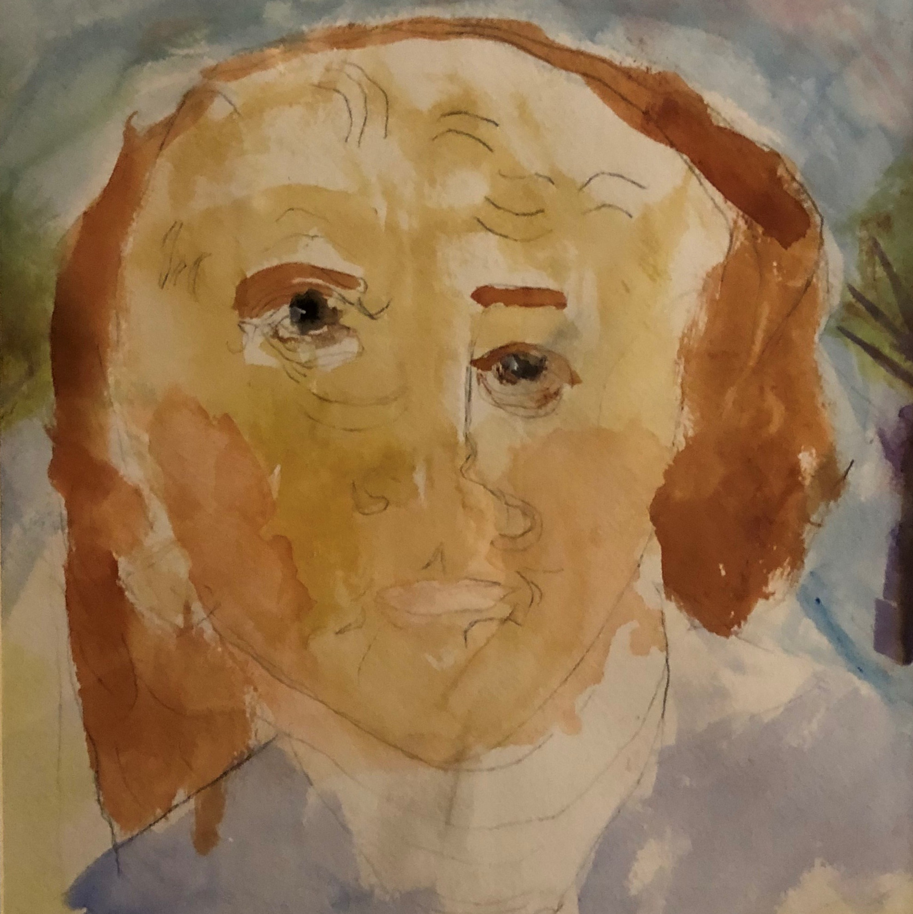

9x12 pastel on paper
A marvellous 70 degree day in March got me outside. After tendon surgery one week earlier, i was a bit limited in my location.
My husband, Carl, took good care of me setting me up in the back yard in a recliner with two side tables of pastels.
With my 2 dogs playing around me and Carl cleaning the winter debris, I ventured to complete the painting, Plein Air,
in a single outside session.
I love painting the outdoors and I love our backyard. New England any time of the year is gorgeous. When the
trees are leaf-less, you can see into the woods so much deeper. I wanted to reflect the warmth of the unusually warm
day. The composition is very personal with many family memories attached to the view from the patio or what we see when we look
out our living room window. Carl cleans the woods and keeps up the wood pile from trees that fall during storms. Billy had a vision
for defining the forest edge and worked to move the rocks back into a pleasing row and clearing the area in front. My son, David, gives me
yearly pleasure when I see "daffodil alley" which blooms every spring right behind the stone wall. He took the time to help me plant
all the bulbs many years ago.
005

10x14 pastel on paper

Spring backyard tree photo
Fractals - The Fractal Geometry of Nature
- The inspiration for this painting came to me by looking out into my backyard trees and seeing winter still holding on. Staring up through the branches
you notice the "randomness" of the branches within the composition. Are they really random? Each branch influences the other's growth setting up a pattern
based on the tree type, wind, sunlight, etc. This same concept can be applied throughout nature, art composition, music composition, and even in economics.
They all grow and bend based on dependencies. I was discussing this randomness with my mathematically-astute daughter, Stephanie, and she pointed me to
Benoit Mandelbrot, a French mathematician who discusses this theory in a
2010 TED talk.
Now to approach the painting. I found a photograph I had taken last spring looking up through blossoming leaves. When looking through the branches you can see
layers and layers of leaves, branches, other trees, atmosphere, light and so on. Frequently when painting trees and branches, I paint the tree as a larger shape,
catching the oneness of the tree and how light bounces off it creating it's volume and integrating it with the landscape. This time I wanted to focus up close
and catch the ever ending wonder of all that is happening amid the branches.
I started with watercolor and proceeded to layer one color at a time, initially masking out white. I removed some of the mask part way through to have more layers of
various colors. I finally finished by adding some opacity overlaying pastels, which also can layer. I loved working this painting, getting lost in the tedium of layering,
thinking about the beauty of nature and mathematics. Math, nature and art meet again!
004
This painting was made for my son, Billy, who is an incredible visual and musical artist and also loves to climb. One of his
favorite climbing spots is in Pawtuckaway, NH. As a climber, you notice every crevice and texture. This photo tells the climber's
story with a close up of a rock with so many varied textures. The color of chalk can be seen where many prior climbing attempts
have happened over and over.
Capturing the beauty of this photo in a pastel required being able to depict the various textures and the range of colors.
I had chosen to make this painting on tempered hard board using a pastel ground so i could control the texture. I initially taped off a 20""x20"
square and put down several layers of ground just to get the pastel to take. Initially I was not worried about the rock texture as
I needed to put down under layers. Once happy with the under layer blocking of colors and shapes, I applied fixative to set the pastel and
then put down more ground, this time caring about the actual rock texture. The next time I re-applied pastel, the upper layers
easily caught the desired texture.
I am hoping to to get more photos and a weekend of painting in Pawtuckaway late summer 2020, providing Covid-19 allows us to do so.
Fingers crossed!
003

Billy's Ben, painted when he was a 5 year old
Working with my daughter Stephanie and her fourth grade classmates one at a time, each student painted one of the pre-sketched scenes from Ben's life.
My youngest son, Billy, who was 5 years old accompanied me. While I worked with the fourth graders, Billy sat next to me and painted
his own Ben that actually had a good likeness! The Life of Ben painting was sold at the School Auction to one of the student's proud parents.
002

8x10, watercolor, November 1991, Baby David

18x24, watercolor, Summer 1996, A Memorable Vacation
These are my two favorite watercolors made with love. My son David with his Doggy Douglas makes me smile with memories of bringing him home.
Our Cape Cod vacations were happy times, this one was our first with all three children. I love the tenderness conveyed
painting portraits in watercolor.
001